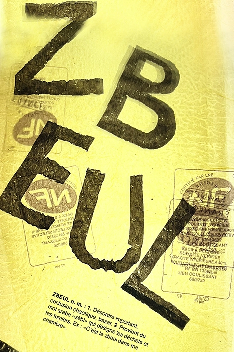
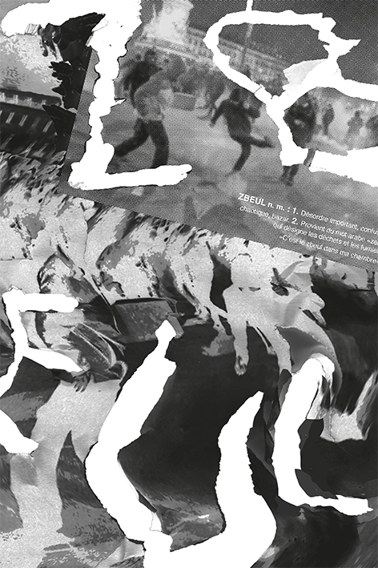

Affiche Typographique : Le ZBEUL
Le terme Zbeul vient du terme zèble en arabe qui désigne les déchets et les fumiers. Zbeul se définit par le désordre et le bazar. 1.Pour reprendre la base du mot et pour parler des déchets, j’ai décidé de créer une image à partir de sacs poubelles. Le fond jaune est une multitude de couche de sacs jaune pour les poubelles à recyclage et le mot est en sac poubelles noir. Le fait de créer un support de communication à partir d’un champs lexical commun me paraissait cohérent. Le logo «NF» qui apparaît nous donne également des informations qui ne sont pas forcément «propre» sur une affiche mais c’était aussi l’esthétique que je recherchais. Je pense que si j’avais pu réaliser ce support sur un sac poubelle sale pour accentuer cet effet de dérangement je l’aurais fait. 2.La manifestation ou «Manif» est un moment ou les citoyens peuvent montrer leur désaccord etou mécontentement. Le but est de se rassembler et de se déplacer en un seul très grand groupedans les rues de la ville. Souvent, c’est à l’occasion d’une manifestation que les rues desvilles sont les plus remplies, c’est l’occasion de «désordonner la ville» pour se faireentendre. Dans cette affiche, une photo de manifestation apparaît sous deux formes différentes. Une, avec une déformation et l’autre, suggérer grâce à une pixellisation. De cefait il y a deux fois plus de foules présente dans l’affiche, ce qui crée un désordre flagrant. Le mot «zbeul» est inscrit de façon diforme, avec des lettres qui peuvent sortir ducadre, qui est présenté comme caractéristiques de désordre. 3.Dans cette affiche mon but était de montré le premier terme. Avec un jeu typographique j’aimis en évidence le «z», le «e», le «b» et le «l» afin que le lecteur puissse lire ce mot avantsa transformation. Cette affiche comporte plusieurs effets photoshop superposés car mon butétait d’essayer de saturer l’image de sorte à ce qu’elle devienne une «image déchet» au vu decomment elle a été traitée. Elle comporte également plein de typographies différentes ce quipoursuis dans ce principe de désordre.


